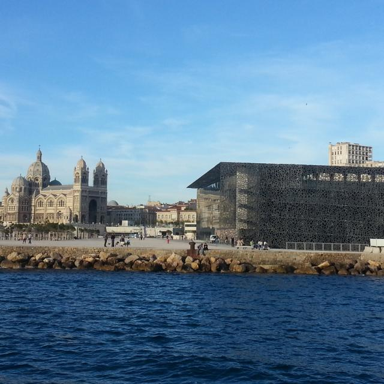

Il existe une trentaine de musées à Marseille couvrant toutes les périodes de l’histoire, de l’Antiquité à
nos jours. Si vous préférez les musées plus insolites, Marseille saura vous satisfaire, pourquoi ne pas vous
laissez tenter par le musée du santon, le musée du savon de Marseille, la Maison des cinématographies de la
méditerranée ou encore pour les plus Rock’n’Roll le musée de la moto ! Il n’y a plus qu’à choisir !
Musées Marseille
Musée d'Histoire de Marseille
Situé près du Vieux-Port de Marseille, le Musée d'Histoire de Marseille est l'un des plus anciens musées d'histoire urbaine en France. Il présente l'évolution de la ville depuis environ 600 avant J.-C., à travers des artefacts, des maquettes et des présentations multimédias.
Musée des Beaux-Arts de Marseille
Ce musée abrite une collection d'œuvres d'art européennes allant du Moyen Âge à la période contemporaine, comprenant des peintures, des sculptures et des arts décoratifs. La collection couvre plusieurs époques et styles, offrant aux visiteurs un aperçu de l'évolution de l'art.
Muséum d'Histoire Naturelle de Marseille
Ce musée met en avant la diversité de la nature, présentant des expositions sur les plantes, les animaux, les roches et les minéraux. Il propose également des contenus éducatifs sur l'évolution de la Terre et la biodiversité.

Musée Cantini-Braque
Axé sur l'art moderne et contemporain, ce musée rend hommage à Georges Braque. Sa collection comprend des œuvres de peinture, de sculpture et d'installations artistiques datant du début du XXe siècle jusqu'à nos jours.
Musée de Borely
Situé dans le magnifique parc Borely, ce musée met en avant l'art et les arts décoratifs des XVIIIe et XIXe siècles. La collection inclut des meubles classiques, des peintures et des céramiques, offrant aux visiteurs un aperçu du mode de vie de cette période.
L'Histoire de Marseille: Une ville en perpétuelle évolution
Plurielle, riche et unique, Marseille a forgé sa personnalité au fil des millénaires. Dès le paléolithique, cette terre ensoleillée a été un lieu d’habitation privilégié. Les premiers hommes ne s’y sont pas trompés et ils n’ont jamais quitté cette terre jusqu’à y fonder une ville majeure de l’Histoire de France.

Invader Was Here: Space Invaders à Marseille
Peut-être avez-vous déjà rencontré ces petites créatures en mosaïque sur les murs, au détour d’une rue, un extra-terrestre, un gabian ou encore la Bonne Mère ? Ces œuvres atypiques et colorées ont fleuries dans la ville sous le soleil de l’été ! On en compte 100, toutes éparpillées dans les 4 coins de la ville ! partez à la découverte de ces mosaïques surprenantes de l’artiste Invader et laissez vous portez jusqu’au MAMO, le centre d’Art de la Cité Radieuse où une exposition lui est entièrement dédiée !
Une journée au Mucem: Un musée de Marseille, mais pas que...
Le Mucem peut être perçu comme un pont qui relie symboliquement les différentes cultures méditerranéennes, mais également de façon littérale en créant de nouvelles circulations entre le Vieux-Port, le quartier du Panier et celui de la Joliette. Conçu comme un cheminement architectural, découvrez au grès de ma visite du Mucem comment profiter d’une balade dans l’enceinte du musée sans nécessairement entrer à l’intérieur.